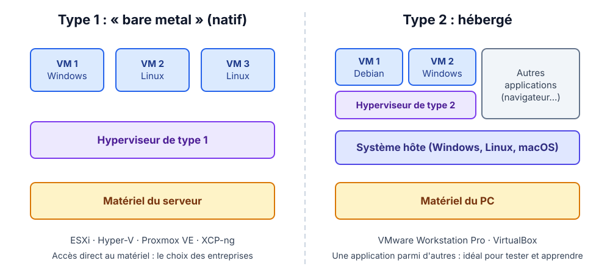

Hyperviseur et machine virtuelle¶
Résumé
Cette partie explique ce que fait un hyperviseur, comment fonctionne une machine virtuelle et en quoi elle diffère d'un ordinateur physique, puis présente les deux types d'hyperviseurs (type 1 et type 2) sans entrer dans les détails des produits, qui viendront au jour 3.
Côté pratique, on vérifie que son PC sait virtualiser (Intel VT-x ou AMD-V activé, hyperviseur de Windows actif ou non), puis on prend en main VMware Workstation Pro : version, dossier des VM, préférences et réseaux virtuels. À la fin, chacun a rempli la fiche d'identité de son poste de virtualisation.
| Propriété | Valeur |
|---|---|
| Difficulté | Débutant |
| Durée estimée | 1 h 30 |
| Version décrite | VMware Workstation Pro 26H1 sur Windows 10 (20H1 ou plus récent) ou Windows 11 |
| Place dans le parcours | Partie 2 sur 17 du parcours Virtualisation — jour 1 |
| Dernière mise à jour | 2026-11-16 |
Convention de lecture
🖥️ PC hôte (Windows et Workstation) · 💬 activité en binôme ou en groupe · ✍️ exercice. Les menus de Workstation sont écrits en anglais ; dans la version française, ils sont au même endroit.
1. L'hyperviseur, chef d'orchestre des ressources¶
L'hyperviseur est le logiciel qui crée les machines virtuelles et répartit les ressources de la machine hôte entre elles. On l'appelle aussi VMM (Virtual Machine Monitor, moniteur de machines virtuelles).
Il travaille en deux temps :
- À la création de chaque VM, il fabrique des ressources virtuelles : un nombre de processeurs virtuels (vCPU), une quantité de mémoire, un ou plusieurs disques, une ou plusieurs cartes réseau. Ces valeurs agissent comme des limites : la VM ne pourra pas utiliser plus que ce qui lui a été attribué.
- Pendant le fonctionnement, il joue le chef d'orchestre : il donne à chaque VM le temps de processeur, la mémoire et les accès au disque et au réseau dont elle a besoin, au bon moment et dans la limite fixée à la création.
Une image pour s'en souvenir
On peut comparer l'hyperviseur à un arbre qui envoie à chacune de ses feuilles la sève dont elle a besoin : le tronc (l'hyperviseur) puise dans les racines (le matériel) et distribue, branche par branche (VM par VM), les bonnes quantités.
Ses missions :
| Mission | Ce que cela veut dire |
|---|---|
| Partager le processeur | Chaque vCPU est, pour l'hôte, une tâche à exécuter ; l'hyperviseur les fait passer à tour de rôle sur les cœurs réels |
| Partager la mémoire | Il attribue à chaque VM une zone de la mémoire de l'hôte et empêche une VM de lire la mémoire d'une autre |
| Simuler les périphériques | Il présente à la VM une carte mère, une carte réseau, un contrôleur de disque, une carte graphique… virtuels |
| Isoler les VM | Un plantage ou un virus dans une VM ne doit pas toucher les autres VM ni l'hôte |
| Gérer le cycle de vie | Créer, démarrer, suspendre, arrêter, cloner, déplacer les VM, prendre des instantanés |
2. Comment fonctionne une machine virtuelle ?¶
2.1 Un matériel « fabriqué »¶
Le système installé dans une VM (le système invité) croit tourner sur un vrai ordinateur. Il démarre sur un BIOS ou un UEFI virtuel, voit une carte mère virtuelle, une carte réseau virtuelle avec sa propre adresse MAC, et un disque qui est en réalité un fichier sur le disque de l'hôte.
Certains de ces composants sont émulés : l'hyperviseur imite un vrai modèle de matériel connu (une vieille carte réseau Intel, un contrôleur de disque standard) pour que n'importe quel système le reconnaisse sans pilote particulier. D'autres sont paravirtualisés : ce sont des composants « idéaux » qui n'existent pas en vrai, plus rapides, mais qui demandent un pilote spécial dans l'invité (installé par les VMware Tools sous Windows, déjà présent dans le noyau sous Linux). La différence est approfondie au jour 3.
2.2 Le rôle du processeur : Intel VT-x et AMD-V¶
Un processeur protège le noyau du système (la partie qui pilote le matériel) des programmes ordinaires. Dans une VM, le noyau de l'invité ne doit pas commander directement le vrai matériel, sinon il prendrait le contrôle de l'hôte et des autres VM.
Depuis 2005-2006, les processeurs Intel (VT-x) et AMD (AMD-V) savent exécuter le code d'une VM dans un mode invité : le code de la VM tourne directement sur le processeur, à pleine vitesse, et dès qu'il tente une opération sensible (accéder au matériel, modifier la mémoire protégée), le processeur rend la main à l'hyperviseur, qui traite la demande à sa place. Une seconde génération de ces extensions (EPT chez Intel, RVI chez AMD) accélère aussi la gestion de la mémoire des VM.
Sans VT-x ou AMD-V, pas de VM 64 bits
VMware Workstation Pro demande un processeur 64 bits sorti en 2011 ou après, et l'extension VT-x ou AMD-V est indispensable pour faire tourner un système invité 64 bits. Ces extensions existent dans presque tous les processeurs actuels, mais elles sont parfois désactivées dans le BIOS/UEFI du PC : c'est l'objet du TP de la section 4.
2.3 Machine physique ou machine virtuelle : les différences¶
| Machine physique | Machine virtuelle | |
|---|---|---|
| Matériel | Composants réels, achetés | Composants virtuels, créés par l'hyperviseur |
| Disque | Un disque dur ou SSD | Un ou plusieurs fichiers sur le disque de l'hôte |
| Ajouter de la mémoire | Ouvrir le boîtier, acheter une barrette | Changer un nombre dans les paramètres de la VM |
| Démarrage | Bouton d'alimentation | Bouton Power On de l'hyperviseur |
| Copier la machine | Réinstaller ou cloner le disque avec un outil | Cloner la VM en quelques clics |
| Revenir en arrière | Restaurer une sauvegarde | Revenir à un instantané en quelques secondes |
| Déplacer sur un autre matériel | Réinstaller, changer les pilotes | Copier les fichiers de la VM, ou la déplacer à chaud entre hôtes |
| Performances | Tout le matériel pour un seul système | Ressources partagées, légère perte due à la virtualisation |
| Pannes | Une panne touche une machine | Une panne de l'hôte touche toutes ses VM |
La partie 3 fait vérifier ces différences de l'intérieur d'une VM, avec des commandes.
3. Les deux types d'hyperviseurs¶

La différence tient en une question : y a-t-il un système d'exploitation entre l'hyperviseur et le matériel ?
3.1 Type 1 : « bare metal » ou natif¶
L'hyperviseur de type 1 s'installe directement sur le matériel, à la place d'un système d'exploitation classique. Il n'y a pas de Windows ni de Linux « généraliste » en dessous : l'hyperviseur accède directement aux ressources, et la quasi-totalité de celles-ci est consacrée aux VM. C'est le type préféré des entreprises pour leurs serveurs.
Exemples : VMware ESXi, Microsoft Hyper-V, Proxmox VE (basé sur KVM), XCP-ng, Nutanix AHV.
Deux cas particuliers à connaître
- Hyper-V s'active comme une fonctionnalité de Windows, ce qui le fait ressembler à un type 2. Pourtant, Microsoft le classe en type 1 : une fois activé, l'hyperviseur démarre en premier, et Windows lui-même devient une sorte de VM privilégiée (la « partition parente »).
- KVM transforme le noyau Linux en hyperviseur. Red Hat le classe en type 1, d'autres auteurs en type 2 : la classification est discutée. Ce qui compte en pratique : KVM est un module du noyau qui exécute les VM avec l'aide de VT-x ou AMD-V.
3.2 Type 2 : hébergé¶
L'hyperviseur de type 2 est une application qui s'installe sur un système d'exploitation existant (Windows, Linux, macOS), comme un navigateur ou un traitement de texte. C'est le plus simple à mettre en place, et il permet de créer des VM indépendantes du système hôte.
Exemples : VMware Workstation Pro (Windows et Linux), Oracle VirtualBox (Windows, Linux, macOS), VMware Fusion et Parallels Desktop (macOS).
La limite du type 2
Pour le système hôte, l'hyperviseur n'est qu'une application parmi d'autres, sans priorité sur les ressources. Le système hôte garde aussi des ressources pour lui-même. Une autre application qui a soudain besoin de beaucoup de ressources (ouvrir un très gros fichier, une mise à jour de Windows, un antivirus qui analyse le disque) peut ralentir les VM. C'est parfait pour apprendre, tester et développer, pas pour faire tourner les serveurs d'une entreprise.
3.3 💬 Activité : classer les hyperviseurs¶
Par deux, 15 minutes, avec Internet. Trouver trois solutions de virtualisation, dont au moins une de type 1 et une de type 2, et remplir pour chacune ce tableau :
| Nom | Éditeur | Type 1 ou 2 | Gratuit ou payant ? | Usage typique | Différence avec les deux autres |
|---|---|---|---|---|---|
| … | … | … | … | … | … |
Mise en commun : chaque binôme présente une solution en une minute. Seul, comparer son tableau avec les exemples ci-dessous.
Exemples de réponses
| Nom | Éditeur | Type | Licence | Usage typique |
|---|---|---|---|---|
| VMware ESXi | Broadcom | 1 | Payant (abonnement) ; une édition gratuite limitée (ESXi 8.0 Update 3e, sans support, sans vCenter) est proposée depuis avril 2025 | Serveurs d'entreprise, gérés par vCenter |
| Microsoft Hyper-V | Microsoft | 1 | Inclus dans Windows Server et dans Windows 10/11 Pro, Entreprise, Éducation | Entreprises équipées de Windows Server, postes de développeurs |
| Proxmox VE | Proxmox Server Solutions | 1 | Libre et gratuit ; abonnement facultatif pour le support et le dépôt « entreprise » | PME, labs, alternative à VMware depuis 2023 |
| XCP-ng | Vates | 1 | Libre et gratuit, support payant | Alternative libre à VMware, basée sur Xen |
| VMware Workstation Pro | Broadcom | 2 | Gratuit pour tous les usages depuis le 11 novembre 2024 | Labs, formation, tests sur un PC Windows ou Linux |
| Oracle VirtualBox | Oracle | 2 | Gratuit (licence libre GPL) ; le pack d'extensions a une licence à part, payante pour un usage en entreprise | Tests et formation, multiplateforme (y compris macOS) |
Différences à faire ressortir : les types 1 visent la production (performances, haute disponibilité, administration centralisée de plusieurs hôtes) ; les types 2 visent le poste de travail (facilité d'installation, cohabitation avec les applications habituelles).
4. TP : vérifier que son PC sait virtualiser¶
4.1 La virtualisation matérielle est-elle activée ?¶
- 🖥️ Ouvrir le Gestionnaire des tâches (Ctrl+Shift+Esc), onglet Performances, puis Processeur.
- En bas à droite, repérer la ligne Virtualisation : elle doit indiquer Activé.
- Noter aussi le nombre de Cœurs et de Processeurs logiques : ils serviront à dimensionner les VM en partie 4.
La ligne Virtualisation indique « Désactivé »
Le processeur sait virtualiser, mais la fonction est coupée dans le BIOS/UEFI du PC. Il faut redémarrer, entrer dans le BIOS/UEFI (touche F2, Del, F10 ou F12 selon le constructeur, affichée au démarrage) et activer l'option, dont le nom varie : Intel Virtualization Technology, Intel VT-x, VT-x, Virtualization, ou SVM Mode sur les processeurs AMD. Enregistrer, puis éteindre complètement le PC et le rallumer (un simple redémarrage ne suffit pas toujours). Sur un PC géré par un établissement ou une entreprise, l'accès au BIOS peut être verrouillé : demander à l'administrateur.
4.2 L'hyperviseur de Windows est-il actif ?¶
Windows 10 et 11 peuvent lancer leur propre hyperviseur (celui d'Hyper-V) sans que l'utilisateur l'ait demandé : il sert à la sécurité basée sur la virtualisation (VBS, dont l'Intégrité de la mémoire), à WSL 2 ou au Bac à sable Windows. Dans ce cas, Workstation ne peut plus piloter VT-x lui-même : il fonctionne en mode « Host VBS », en passant par l'hyperviseur de Windows.
- 🖥️ Ouvrir Informations système : touche Win+R, taper
msinfo32, puis Enter. - Dans Résumé système, lire la ligne Sécurité basée sur la virtualisation : « En cours d'exécution » signifie que l'hyperviseur de Windows est actif.
- Tout en bas de la même liste, les lignes consacrées à Hyper-V sont remplacées par une phrase indiquant qu'un hyperviseur a été détecté quand l'hyperviseur de Windows est actif.
Ce que change le mode Host VBS
D'après la documentation de VMware, en mode Host VBS :
- les VM peuvent être plus lentes ;
- la virtualisation imbriquée (une VM qui fait elle-même tourner des VM) n'est pas possible.
Pour les jours 1 et 2, ce n'est pas gênant. Pour le jour 3, où l'on installe Proxmox VE dans une VM Workstation, il faudra désactiver l'hyperviseur de Windows : la procédure est dans les annexes. Ne rien changer pour l'instant : cette procédure baisse la sécurité de Windows et ne sera utile qu'au jour 3, si la virtualisation imbriquée est nécessaire.
5. TP : prendre en main VMware Workstation Pro¶
Workstation Pro est gratuit pour tous les usages depuis novembre 2024. S'il n'est pas encore installé, suivre la procédure des annexes (un compte gratuit sur le portail de Broadcom est obligatoire pour le télécharger).
5.1 Vérifier la version¶
- 🖥️ Lancer VMware Workstation Pro. L'onglet Home (Accueil) s'affiche, avec les boutons Create a New Virtual Machine (Créer une nouvelle machine virtuelle) et Open a Virtual Machine (Ouvrir une machine virtuelle).
- Ouvrir Help > About VMware Workstation (Aide > À propos) et noter la version et le numéro de build. Ce parcours décrit la version 26H1 : le nom indique l'année (20**26**) et le semestre (H1, premier semestre).
Pourquoi « 26H1 » et pas « 18 » ?
Jusqu'en 2025, les versions de Workstation étaient numérotées 15, 16, 17… Depuis la version 25H2 (octobre 2025), Broadcom utilise une numérotation calendaire : 25H2, puis 26H1 (mai 2026), puis des mises à jour comme 26H1u1 (update 1).
5.2 Choisir où ranger les VM¶
Une VM occupe vite plusieurs gigaoctets. Par défaut, Workstation les range dans le dossier Documents de l'utilisateur, sous Virtual Machines. Si le dossier Documents est synchronisé avec OneDrive, c'est une très mauvaise idée : OneDrive essaierait d'envoyer en permanence des fichiers de plusieurs gigaoctets qui changent sans arrêt.
- 🖥️ Créer un dossier dédié, de préférence sur un SSD, par exemple
C:\VM(ouD:\VMs'il existe un second disque). - Dans Workstation, ouvrir Edit > Preferences (Édition > Préférences), rubrique Workspace (Espace de travail).
- Dans Default location for virtual machines (Emplacement par défaut des machines virtuelles), choisir le dossier créé, puis OK.
5.3 Jeter un œil aux réglages de la mémoire¶
Toujours dans Edit > Preferences, ouvrir la rubrique Memory (Mémoire). Elle contient deux réglages :
- Reserved memory (mémoire réservée) : la quantité maximale de mémoire de l'hôte que l'ensemble des VM peut utiliser. Ce n'est pas une mémoire prise à l'avance, mais un plafond.
- Additional memory (mémoire supplémentaire) : ce que fait Workstation quand les VM demandent plus que ce plafond. Fit all virtual machine memory into reserved host RAM interdit de dépasser ; Allow some virtual machine memory to be swapped et Allow most virtual machine memory to be swapped autorisent à placer une partie de la mémoire des VM sur le disque (plus lent).
Ne rien modifier : ces notions sont expliquées et mises en pratique en partie 4.
5.4 Découvrir les réseaux virtuels¶
Ouvrir Edit > Virtual Network Editor (Édition > Éditeur de réseau virtuel). Workstation a créé trois commutateurs virtuels (switchs) à son installation :
| Commutateur | Mode | En une phrase |
|---|---|---|
| VMnet0 | Bridged (pont) | Les VM sont branchées directement sur le réseau physique du PC, comme un PC de plus dans la salle |
| VMnet1 | Host-only (réseau privé hôte) | Les VM ne voient que le PC hôte et les autres VM de ce réseau ; pas d'Internet |
| VMnet8 | NAT | Les VM ont leur propre petit réseau privé et sortent sur Internet derrière l'adresse du PC, comme une box Internet |
Noter le sous-réseau de VMnet8 (colonne Subnet Address) : c'est le réseau des VM du jour 1. Fermer l'éditeur sans rien changer. Les trois modes sont étudiés et pratiqués au jour 2.
Pourquoi « NAT » par défaut ?
Le mode NAT donne Internet aux VM sans dépendre du réseau de la salle : pas besoin d'adresse fournie par le réseau de l'établissement, pas de risque de conflit avec les PC voisins. C'est le mode le plus simple et le plus sûr pour débuter.
5.5 ✍️ La fiche d'identité de son poste¶
Recopier et remplir ce tableau. Il servira à dimensionner les VM des prochaines parties.
| Information | Où la trouver | Valeur sur mon PC |
|---|---|---|
| Processeur (modèle) | Gestionnaire des tâches > Performances > Processeur | |
| Nombre de cœurs et de processeurs logiques | Idem | |
| Mémoire vive totale | Gestionnaire des tâches > Performances > Mémoire | |
| Virtualisation matérielle activée ? | Idem, ligne Virtualisation | |
| Hyperviseur de Windows actif (VBS) ? | msinfo32 |
|
| Version de Workstation | Help > About | |
| Dossier des VM | Edit > Preferences > Workspace | |
| Sous-réseau de VMnet8 | Edit > Virtual Network Editor | |
| Espace libre sur le disque des VM | Explorateur de fichiers > Ce PC |
Vérifier son poste
Le poste est prêt pour la suite si :
- la ligne Virtualisation indique Activé ;
- Workstation s'ouvre et affiche une version 26H1 ou plus récente ;
- le dossier des VM est sur un disque local avec au moins 30 Go libres, hors OneDrive ;
- VMnet8 existe dans l'éditeur de réseau virtuel, en mode NAT.
6. Questions de révision¶
- Quelles sont les deux grandes missions d'un hyperviseur ?
- Quelle est la différence entre un hyperviseur de type 1 et un hyperviseur de type 2 ? Donner un exemple de chaque.
- Pourquoi une entreprise préfère-t-elle un hyperviseur de type 1 pour ses serveurs ?
- À quoi servent les extensions Intel VT-x et AMD-V ? Où les active-t-on ?
- Hyper-V s'installe depuis Windows. Pourquoi est-il pourtant classé en type 1 ?
- Quelle est la différence entre VMware Workstation et VirtualBox ? Détailler.
Corrigé
- Créer les machines virtuelles (en fabriquant leurs ressources virtuelles, qui servent de limites) et répartir les ressources de l'hôte entre elles pendant leur fonctionnement, en les isolant les unes des autres.
- Le type 1 (bare metal) s'installe directement sur le matériel, sans système d'exploitation en dessous : VMware ESXi, Hyper-V, Proxmox VE. Le type 2 (hébergé) est une application installée sur un système existant : VMware Workstation Pro, VirtualBox.
- Il accède directement au matériel, sans système généraliste qui consomme des ressources ou qui peut les ralentir ; presque toutes les ressources vont aux VM. Les types 1 offrent aussi les fonctions de production : administration centralisée de plusieurs hôtes, haute disponibilité, migration des VM à chaud.
- Elles permettent au processeur d'exécuter directement le code des VM dans un mode invité et de rendre la main à l'hyperviseur dès qu'une opération sensible est tentée. Sans elles, impossible de faire tourner un système invité 64 bits dans Workstation. Elles s'activent dans le BIOS/UEFI du PC (option Intel Virtualization Technology, VT-x ou SVM Mode).
- Une fois activé, l'hyperviseur d'Hyper-V démarre avant Windows et s'exécute directement sur le matériel ; Windows tourne alors au-dessus, dans une partition parente privilégiée. C'est donc bien un hyperviseur posé sur le matériel.
- Les deux sont des hyperviseurs de type 2, aujourd'hui gratuits (Workstation Pro l'est pour tous les usages depuis novembre 2024). VirtualBox s'installe sur Windows, Linux et macOS, et accepte plusieurs formats de disques (VDI, son format natif, mais aussi VHD et VMDK). Workstation Pro s'installe sur Windows et Linux, utilise le format de disque VMDK (celui de toute la gamme VMware, ce qui facilite le passage d'une VM vers ESXi), et propose un éditeur de réseaux virtuels complet. Les deux savent prendre des instantanés et cloner des VM.
Ressources¶
- Broadcom — Configuration requise du processeur pour Workstation Pro 26H1 — processeurs et extensions de virtualisation exigés (en anglais).
- Broadcom — Workstation sur un hôte où Hyper-V est actif — le mode Host VBS et ses limites (en anglais).
- Microsoft — Architecture d'Hyper-V — pourquoi Hyper-V est un hyperviseur de type 1.
- Microsoft — Activer la virtualisation sur Windows — activer VT-x ou AMD-V dans le BIOS/UEFI.
- Partie précédente : Comprendre la virtualisation · Partie suivante : Créer sa première VM Debian 13.